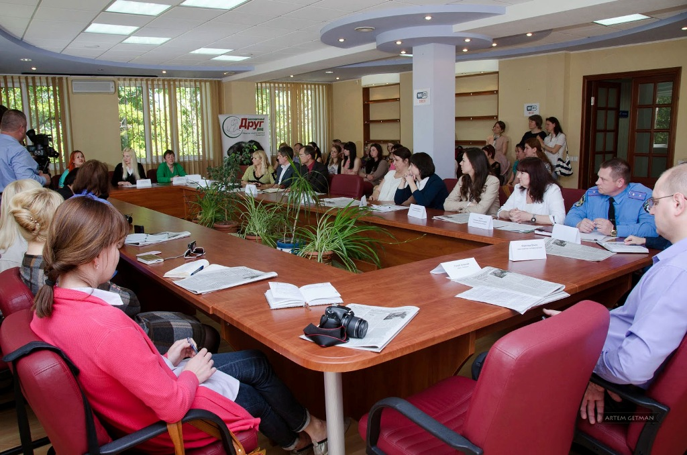

Добро пожаловать на сайт благотворительной организации «Друг»!
Мы предлагаем объединиться всем Краматорчанам, которые неравнодушны к проблеме бездомных и брошенных животных, а также животных, подвергшихся жестокому обращению.
Мы создали в Краматорске Общество Защиты Животных и планируем изменить отношение к животным на общегородском уровне через привлечение городских властей, а не только неравнодушных горожан. Задача не из легких, но мы верим, что, действуя сообща, добьемся успеха!
Цель общественной организации – убрать бездомных животных с улиц нашего города. Самый действенный способ этого достичь – создать приют и стерилизовать их. Так же донести до людей важность ответствнности за своих домашних животных и их приплода. Стерилизованные животные перестают быть агрессивными, они не так часто болеют и проживают долгую и счастливую жизнь.
Есть люди, которые любят животных, и есть такие, которые их недолюбливают. Наш фонд организован, чтобы удовлетворить и тех и других .
- рассказывает Наталья Титомир председатель благотворительного фонда “Друг”
Все желающие помогать животным приглашаются на собрание нашего фонда! Мы собираемся, по мере необходимости по адресу: ул.В.Стуса, гостиница "Краматорск", офис 203 . На наших собраниях мы обсуждаем разные вопросы, предложения.
Каждый может активно поучаствовать в жизни фонда!
Кратко об истории создания

Кто был идейным вдохновителем благотворительного фонда «Друг»?
Сделать что-то подобное Наталья Титомир мечтала всю жизнь, тихонько кормила и лечила бездомышей, но совсем немного.
Затем она познакомилась с чудесной девушкой Анжелой Куденко и с этого все началось. Когда о их идее стало известно, у Натальи раздался телефонный звонок от Антона Дворжака и он сказал, что хочет передать документы уже существующего фонда «Друг»,
котрый был основан в 2008 году уникальной Краматорской поэтессой Алиной Остафийчук,к сожалению , Алины больше нет с нами, но ее дело продолжает жить.. У нас появилась цель не только конкретно помогать животным, но и изменить отношение общества к ним.
С 2010-го мы возобновили работу фонда, занимались переоформлением документов и поиском единомышлеников. C 2011 года стали активно развивать работу фонда в городе.
Где находится так называемая "передержка" бездомных животных?
Годами за свой счет содержание более полутора сотен бездомных собак и кошек города Краматорска осущетвлялось на улице Куинджи 2 ( раньше - Щербакова) территория бывш. хладокомбината, до сентября 2020 когда владельцы земли, попросили освободить территорию в кратчайшие сроки по причине других планов на эту землю. И мы начали поиски новой подходящей территории для наших животных. Тогда еще кандидат в мэры Краматорска Александр Гончаренко стал первым, кто вызвался помочь нашей организации.
Тепеерь уже действующему мэру Краматорска удалось решить проблему с размещением передержки БФ «Друг» для бездомных животных. Животных разместили на территории КФЗ (ООО “Краматорский ферросплавный завод”) осенью того же года. Завод пошел навстречу зоозащитникам и предоставил для них территорию примерно в 20 соток в промзоне рядом с ул. О. Тихого.
Мэр Краматорска призвал неравнодушных граждан помочь в облагораживании территории, которая станет домом для бродячих собак. Мы очень хотим это место обустроить по новым стандартам, чтобы оно было удобное, чтобы сюда можно было приводить деток на экскурсии, чтобы приезжали жители города и выбирали себе четвероногих друзей», - отметила председатель БФ «Друг» Наталья Титомир.
Городская власть идет к нам навстречу.
Начали общаться с властью мы давно, примерно в 2012 году.Первые попытки были не очень успешными.Прошли достаточно длинный путь общения со многими чиновниками города, провели несколько круглых столов с привлечением власти, общественности, ветеринарной медицины, депутатов горсовета, широко обговаривали проблему в прессе.
В Краматорске работала программа по регулированию численности бездомных животных, но ее результаты были не очень эффективными. Так, в 2018 году было стерилизовано 125 животных, в 2019 - 250, и в 2020-м году — ни одного бездомного животного не было стерилизовано.
В январе 2021 принята программа регулирования бездомных животных гуманными методами. Ознакомиться с програмой можно перейдя по этой ссылке.
Она расчитана на пять лет и, по мнению ее авторов, должна решить проблему бездомных животных в Краматорской территориальной громаде современными инструментами.
Инициировали эту программу местные депутаты и общественная организация «Друг».
Предусматривается поэтапная стерилизация, вакцинация и чипирование. После этого животных возвращают в привычную среду обитания.
Также запланирована информационная работа с местными жителями о том, как гуманно вести себя с животными, которые лишились дома.